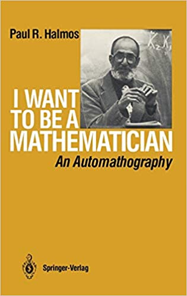

I want to be a mathematician, by Halmos
Saturday August 21, 2021
I don't always agree perfectly with Halmos, but I really like his automathography. I've looked at parts before, but it was great to read the whole thing. It has a grandfatherly vibe, is beautifully written and funny, and frequently has good ideas. Some quotes follow.

"Looking back on those days [growing up in Hungary] now, 50 to 60 years later, I appreciate and admire the atmosphere. Culture was not ridiculous, unusual, or sissy—it was taken for granted. Books and music were regarded as a part of everyone's common heritage. At school we discussed the latest Nick Carter, sure, but we talked about d'Artagnan too, and we could tell each other that we had just read something without being considered odd." (page 7)
"I think by writing." (page 8)
"Anyway, back to chemistry: laboratory work seemed to me an uninspiring and messy waste of time. I was never told and I never caught on that a laboratory could teach you new facts and insights; I regarded it as just one of those chores (like irregular verbs in German and finger exercises for the piano) that the world assigns to apprentices before allowing them to become journeymen. I knew in advance what each experiment was intended to prove, and I proved it; I cooked the books mercilessly. Before the year was over I knew that chemistry was not for me, and I arranged to be transferred to the general liberal arts curriculum." (pages 23-24)
"The [calculus] text was the infamous Granville, Smith, and Longley that, according to rumor, brought each of its authors a royalty income of many thousands of dollars for at least 20 years. It was very bad. The explanations were not explanations—they were neither clear nor correct—they were cookbook instructions, no more. The selling virtue of the book was that it had many exercises, amost all of the the routine mechanical kind." (pages 26-27)
"[In graduate school] I did not understand (never even dreamt of) the idea of a "structure", in the sense in which, later, Bourbaki used that word, and I was stumped by the infinitesimal subtlety of epsilontic analysis. I could read analytic proofs, remember them if I made an effort, and reproduce them, sort of. but I didn't really know what was going on." (page 47)
This is interesting to me... What about modern mathematicians? Are they working because of or in spite of Bourbaki? I know I took some courses that presented hyper-formal versions of things as if there were no alternative, and certainly no real intuition... I'm not sure it's the right way to teach, at least for a first introduction.
"Music and poetry are more important than carburetors and calculus, because both the bus driver and I would be better human beings if we had more in common and because we could then collaborate better to live in a saner world." (page 30)
"Another way in which I wish I had then followed the advice I give now has to do with the old adage about all work and no play. I don't believe it in; I think all work and no play is the only way to get anything done. Having made my point in as shocking a way as I could think of, I'm ready to take it back and modify it. I am not talking about a lifetime of torture and slavery, and I am not excluding the relaxing tennis game, detective story, dinner in Chinatown with a bunch of friends, or Saturday night movie. What I am saying is that the work of a scholar is not torture that would be insupportable without distraction, and that, for most of us, two consuming passions are one too many." (page 53)
"If I had to describe my conclusion [about how to study] in one word, I'd say examples. They are, to me, of paramount importance. Every time I learn a new concept (free group, or pseudodifferential operator, or paracompact space), I look for examples—and of course, non-examples. The examples should include, whenever possible, the typical ones and the extreme degenerate ones." (pages 61-62)
"I did read the first 10 or 20 pages of all those books, and I dipped into other parts, skipping back and forth among them. (I wish I had read the first 10 pages of many more books—a splendid mathematical education can be acquired that way.)" (page 65)
"It's been said before and often, but it cannot be overemphasized: study actively. Don't just read it; fight it! Ask your own questions, look for your own examples, discover your own proofs. Is the hypothesis necessary? Is the converse true? What happens in the classical special case? What about the degenerate cases? Where does the proof use the hypothesis?" (page 69)
"With no official pre-arrangement, I simply tacked up a card on the bulletin board in Fine Hall saying that I would offer a course called "Elementary theory of matrices", and I proceeded to offer it. I prepared for it carefully, a goodly number of students (something like a dozen) attended regularly, and a couple of them took notes. ... As far as money goes, Princeton was agreeable to accepting my services free; I was slightly surprised when, at the end of the term, those services were officially recognized. I received an official request to assign grades in the course—as far as Princeton University and the students were concerned, the course carried graduate credit. From my point of view, as teacher, the course was splendid. No one came unless he wanted to; there was no nonsense about prerequisites and distribution requirements. There was no syllabus; we talked about what we wanted to talk about. There was no homework, there were no exams. When I had to give grades, I did so on the basis of subjective impressions acquired during class and during between-class discussions." (pages 95-96)
Halmos similarly just showed up at the Institute for Advanced Study with a friend of his who was actually invited, and effectively joined by proximity. Bold!
"To write a book based on the notes of a course is a good way to write a book. The most important single feature of good writing—of clear communication of any kind—is organization. If you know the right order in which a sequence of things should be said, and if you know the extent to which you need to emphasize some parts and play others down, your communication battle is more than half won." (page 96)
"I readily admit—I'd like to be among the first to insist—that expository writing should not deviate from currently accepted standard English; in such writing even puns and other attempts at humor, and, of course, outright vulgarity, are badly out of place. Why? Because they are irrelevant, they are distracting, they interfere with the clear reception of the message. Expository writing must not be sloppy in either content or form and, of course, it must not be misleading.; it must be dignified, correct, and clear. Within these guidelines, however, expository writing should be written in a living, colloquial style, it should be evocative in the same sense in which poetry is, and it should not be stuffy, but friendly and informal. The purpose of writing is to communicate, and style is a tool for communication. It should be chosen so as to put the reader at his ease and make the subject seem as easy to him as it already is to the author." (page 113)
"What is important in communication, in lecturing for example, is not what message the speaker sends but what message the listener receives. A part of the art of lecturing is to know when and how to lie. Don't insist on protecting yourself by being cowardly legalistic, but lead the audience to the truth." (page 114)
"..., John Isbell (who, God forgive him, became a categorist), ..." (page 155)
"I give most of the credit [for still remembering Spanish after many years] to the saturation method—do everything, do it all at once, and do it every minute you can possibly spare—the best way of learning there is." (page 172)
"By now I think fondly of it [Uruguay] and wish it well; it gave me something and I left part of me there; I am glad I went, and I am glad I am not there now." (page 199)
I feel similarly about South Korea.
"Both the logician and, say, the harmonic analyst, look for a certain kind of structure, but their kinds of structures are psychologically different. The mathematician wants to know, must know, the connections of his subject with other parts of mathematics. The intuitive similarities between quotient groups and quotient spaces are, at the very least, valuable signposts, the constituents of "mathematical maturity", wisdom, and experience. A microscopic examination of such similarities might lead to category theory, a subject that is viewed by some with the same kind of suspicion as logic, but not to the same extent." (page 205)
"The logician" here is not "the mathematician"...
"He [Carl E. Linderholm] became famous for a brilliant, witty, extended mathematical in-joke, a book called Mathematics Made Difficult [PDF]. The book treats high school trigonometry, for instance, from the point of view of category theory, for instance—I recommend it highly." (page 222)
As reviewed on Amazon by Easwaran, with review title "Categories for the Non-Working Mathematician" (itself a reference to Categories for the Working Mathematician):
This book is a wonderfully humorous satire of the project (possibly pushed by Mac Lane, Lawvere, Grothendieck, and others, though never as far as one might think) to reformulate all of mathematics on category-theoretic foundations. As such, many of the jokes will be lost on a reader with no familiarity with the language of category theory. But there are plenty of other jokes that even a high schooler should be able to appreciate. There's also some entertaining national stereotypes of French mathematicians and others that probably date the book a bit.
Highly recommended for a math graduate student who needs distraction from work.
On page 223 I learned that Halmos reviewed Mathematics and Plausible Reasoning, which I haven't finished reading.
"As for quality [of books being higher than that of articles], that's just a feeling I have. I think that, with extremely rare exceptions, even the book of lowest quality is likely to be correct most of the time, and to be well enough organized and expounded that studying it would add to your mathematical wealth. Articles are more often wrong and very often so badly done that reading them is more work than it is worth. They must exist—don't misunderstand me—I am not advocating that we stop publishing current research papers and go back to the days when "publish" was synonymous with "publish a book". No, papers are absolutely necessary, but books are better." (page 234)
"I am convinced (by faith) that if I knew everything about Boolean algebras I would be very close to knowing everything about analysis—or, to be a little more precise about such a vague article of religion, that I would be as close as a person who knows everything about measurable sets is to knowing everything about measurable functions. Close, yes, but not yet there." (page 245)
I'm not sure I really understand what he's getting at here, but it sounds interesting.
Halmos advocates the Moore method (e.g., page 257). I'd be curious to see the documentary about it, "Challenge in the Classroom"... (Did I see it, once?)
"I think an automobile transmission mechanic should try to be the best automobile transmission mechanic he has the talent to be, and butlers, college presidents, shoe salesmen, and hod-carriers should aim for perfection in their professions. Try to rise, improve conditions if you can, and change professions if you must, but as long as you are a hod-carrier, keep carrying those hods. If you set out to be a mathematician, you must learn the profession, every part of it, and then work at it, profess it, live it as best you can. If you keep asking "what's there in it for me?", you're in the wrong business. If you're looking for comfort, money, fame, and glory, you probably won't get them, but if you keep trying to be a mathematician, you might." (pages 264-268)
I like this whole section and put it up as a separate page: How to be a pro.
"On a Ph.D. oral he [Tamarkin] asked the candidate about the convergence properties of a certain hypergeometric series. "I don't remember", said the student, "but I can always look it up if I need it." Tamarkin was not pleased. "That doesn't seem to be true", he said, "because you sure need it now."" (page 272-273)
"But let's get back to teaching by challenging. An intrinsic aspect of the method at all levels, elementary or advanced, is to concentrate attention on the definite, the concrete, the specific. Once a student understands, really and truly understands, why 3x5 is the same as 5x3, then he quickly gets the automatic and obvious but nevertheless exciting unshakable generalized conviction that "it goes the same way" for all other numbers. We all have an innate ability to generalize; the teacher's function is to call attention to a concrete special case that hides (and, we hope, ultimately reveals) the germ of the conceptual difficulty." (page 272)
"(Do all readers know that I reject "Hal-mush", some people's notion of the "right" way to pronounce me? Please, please, say "Hal-moss".)" (page 292)
"How to do almost everything" (title of chapter 14, page 319)
"Mathematics is not a deductive science—that's a cliché. When you try to prove a theorem, you don't just list the hypotheses, and then start to reason. What you do is trial and error, experimentation, guesswork. You want to find out what the facts are, and what you do is in that respect similar to what a laboratory technician does, but it is different in its degree of precision and information. Possibly philosophers would look on us mathematicians the same way as we look on the technicians, if they dared." (page 321)
"I love to do research, I want to do research, I have to do research, and I hate to sit down and begin to do research—I always try to put it off just as long as I can." (page 321)
"It is important to me to have something big and external, not inside myself, that I can devote my life to. Gauss and Goya and Shakespeare and Paganini are excellent, their excellence gives me pleasure, and I admire and envy them. They were also dedicated human beings. Excellence is for the few but dedication is something everybody can have—should have—and without it life is not worth living." (pages 321-322)
"Despite my great emotional involvement in work, I just hate to start doing it; it's a battle and a wrench every time. Isn't there something I can (must?) do first? Shouldn't I sharpen my pencils perhaps? In fact I never use pencils, but "pencil sharpening" has become the code phrase for anything that helps to postpone the pain of concentrated attention. It stands for reference searching in the library, systematizing old notes, or even preparing tomorrow's class lecture, with the excuse that once those things are out of the way I'll really be able to concentrate without interruption.
"When Carmichael complained that as dean he didn't have more than 20 hours a week for research I marvelled, and I marvel still. During my productive years I probably averaged 20 hours of concentrated mathematical thinking a week, but much more than that was extremely rare. The rare exception came, two or three times in my life, when long ladders of thought were approaching their climax. Even though I never was dean of a graduate school, I seemed to have psychic energy for only three or four hours of work, "real work", each day; the rest of the time I wrote, taught, reviewed, conferred, refereed, lectured, edited, travelled, and generally sharpened pencils all the ways I could think of. Everybody who does research runs into fallow periods. During mine the other professional activities, down to and including teaching trigonometry, served as a sort of excuse for living. Yes, yes, I may not have proved any new theorems today, but at least I explained the law of sines pretty well, and I have earned my keep." (page 322)
There's more good stuff here... Almost worth putting up the whole section ("How to do research") but I'll stop short of that. In particular interesting that he describes his process as largely writing-driven: "I sit down at my desk, pick up a black ball-point pen, and start writing..." (page 323)
"For Dieudonné the important result is, I think, the powerful general theorem, from which it is easy to infer all the special cases you want; for me the greatest kind of step forward is the illuminating central example from which it is easy to get insight into all the surrounding sweeping generalities." (page 325)
"André Weil's logarithmic law (first-rate people choose first-rate people, but second-rate people elect third-rate ones) works the same way whether the vote concerns a minor addition to the teaching staff or the elevation of a colleague to leadership." (page 349)
Ah; there's a similar thing on page 123 too:
"André Weil suggested that there is a logarithmic law at work: first-rate people attract other first-rate people, but second-rate people tend to hire third-raters, and third-rate people hire fifth-raters. If a dean or a president is genuinely interested in building and maintaining a high-quality university (and some of them are), then he must not grant complete self-determination to a second-rate department; he must, instead, use his administrative powers to intervene and set things right. That’s one of the proper functions of deans and presidents, and pity the poor university in which a large proportion of both the faculty and the administration are second-raters; it is doomed to diverge to minus infinity." (page 123)
A similar sentiment is often attributed to Steve Jobs: "A level people hire level A people, B level people hire C level people."
"Napolean said that the only thing worse than a bad general is two good ones, and I agree: a bad chairman will hurt a department less than a committee can, even if it consists of competent people full of good intentions." (page 351)
"I believe that the work of the world is done by people, not by committees. Socrates, the teacher, was not a committee, nor was Archimedes, the inventor and research mathematician. The great strides forward (in administration and in finance, as well as in science and in the humanities) have always been made by people, not by committees; Lincoln, Rothschild, Newton, and Goethe bear witness." (page 352)
"I read the Times book reviews because I don't have the time to read all the books that come out, and reading reviews keeps me closer in touch with modern culture than not reading anything at all." (page 375)
"The purpose of the review is to provide a first approximation in three or four pages to what the book does (or could have done) in three or four hundred." (page 375)
"In other words, exposition is intended to attract and describe more than to explain and instruct." (page 390)
"The most difficult technical problem of written communication (whether the intended result is a long novel, a short biography, a research paper, or a recipe for cherry pie) is that of linear order. The way we usually receive information about the universe is multidimensional. We learn about something (or somebody) through signals that come to us simultaneously through our many senses. Our sense of balance tells us one thing, and the way our muscles stretch another; we see it, hear it, feel it, smell it, and taste it; we find it warm or cold, wet or dry. A lecturer uses words, but, at the same time, he controls how fast he speaks and how loudly; his facial expressions, his gestures, and his tone of voice are all part of the show. The most highly distilled form of verbal communication is writing. The only raw material a writer has is his vocabulary, and the presentation of his words in a total order is the only way he has to produce an effect." (page 394)
"You can't be perfect, but if you don't try, you won't be good enough." (page 400)
"Archimedes taught us that a small quantity added to itself often enough becomes a large quantity (or, in proverbial terms, that every little bit helps). When it comes to accomplishing the bulk of the world's work, and, in particular, the work of a mathematician, whether it is proving a theorem, writing a book, teaching a course, chairing a department, or editing a journal, I claim credit for the formulation of the converse: Archimedes's way is the only way to get something done. Do a small bit, steadily every day, with no exception, with no holiday. As an example, I mention the first edition of my Hilbert Space Problem Book, which had 199 problems. I wrote most of the first draft during my Miami year, and I forced myself, compulsively, to write a problem a day. That doesn't mean that it took 199 days to write the whole book—the total came to about three times that many." (pages 401-402)
Somewhere, I'm not sure where now, Halmos talks about being a teacher versus being an example... Interesting to think about: How are these different? What's more useful, when? Is this an apprentice model? How can that be done well? It reminds me of when I heard Botstein talk about how he wouldn't hire a professor who wasn't doing research. At the time I was surprised; I knew so little.